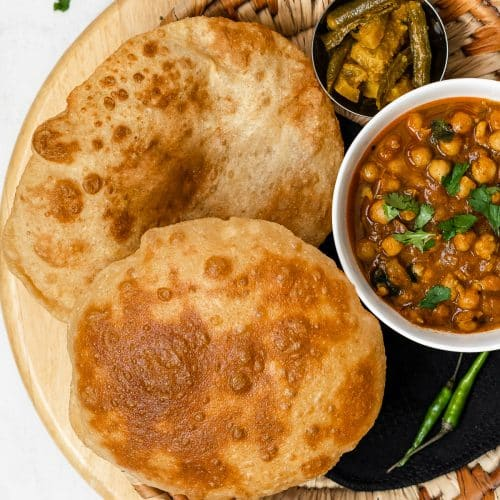

Chole Bhature Recipie

Description
Chole bhature is a popular Punjabi dish that consists of chickpeas (chole) in a spicy gravy and
fluffy, fried breads (bhature).
It is a hearty and flavorful meal that is perfect for a special occasion or a weekend brunch.
Ingredients
Ingredients for Chole:
- 1 cup chickpeas, soaked overnight
- 1 onion, chopped
- 2 tomatoes, chopped
- 1 inch ginger, grated
- 4 garlic cloves, minced
- 1 teaspoon turmeric powder
- 1 teaspoon coriander powder
- 1 teaspoon cumin powder
- 1 teaspoon garam masala powder
- 1/2 teaspoon red chili powder
- 1/2 teaspoon salt
- 1/4 teaspoon black pepper
- Oil for cooking
Ingredients for Bhature:
- 2 cups all-purpose flour
- 1/2 cup curd
- 1 teaspoon baking soda
- 1/2 teaspoon baking powder
- 1/2 teaspoon salt
- 1/2 cup water, or more as needed
- Oil for deep frying
Steps:
- To make the chole, drain the chickpeas and rinse them well.
- In a pressure cooker, combine the chickpeas, onion, tomatoes, ginger, garlic, turmeric powder, coriander powder, cumin powder, garam masala powder, red chili powder, salt, and black pepper.
- Add enough water to cover the chickpeas by 2 inches.
- Close the pressure cooker and cook on high heat for 3 whistles.
- Let the pressure release naturally for 10 minutes, then release any remaining pressure manually.
- Open the pressure cooker and mash the chickpeas with a fork or potato masher until they are smooth.
- Heat the oil in a large skillet over medium heat.
- Add the chole and cook for 10-15 minutes, stirring occasionally, until heated through.
- To make the bhature, whisk together the flour, curd, baking soda, baking powder, and salt in a large bowl.
- Add the water and stir until the dough comes together.
- Knead the dough on a lightly floured surface for 5-7 minutes, until it is smooth and elastic.
- Cover the dough with a damp cloth and let it rest for 30 minutes.
- After the dough has rested, divide it into 12 equal pieces.
- Roll out each piece of dough into a circle that is about 6 inches in diameter.
- Heat the oil in a large skillet over medium heat.
- Fry the bhaturas in batches for 2-3 minutes per side, or until they are golden brown and puffy.
- Serve the chole and bhature hot with your favorite chutneys.
Back to Home Page